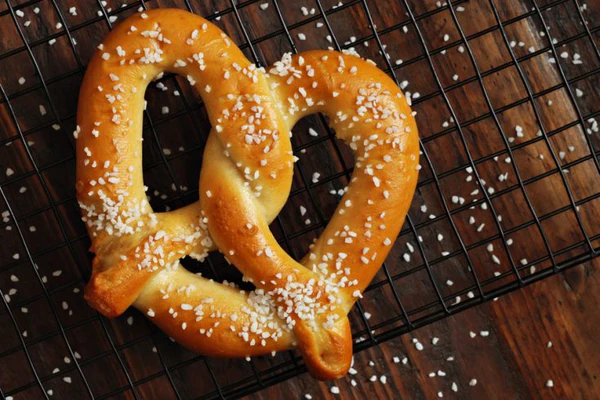
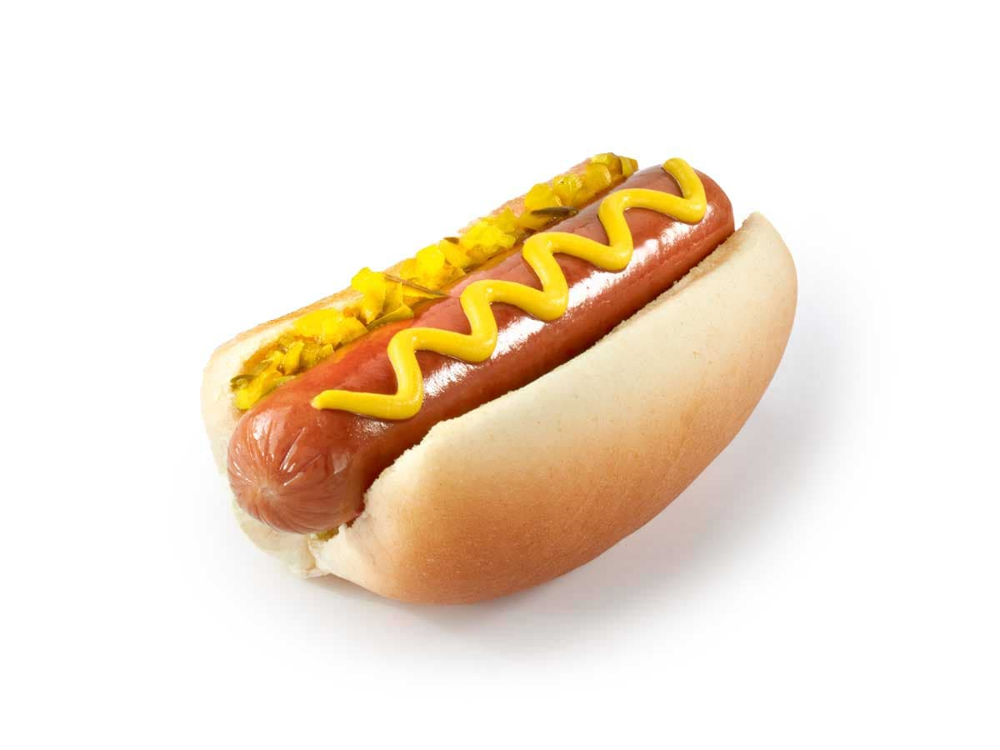

🍿 Butter Popcorn
Description
Whether you're at an excitizing sports match or a calm movie, popcorn is always a great choice with a unique texture and a nice, buttery flavor!
Ingredients
- ~50 Kernels
- Popcorn Machine
- Butter
- Bag
Steps
- Put the kernels in the machine
- Turn on machine
- Wait five minutes for the machine to complete
- Pour popcorn into bag
- Enjoy!
🥨 Soft Pretzel

Description
That salty, nostalgic, New York taste could only be with you through the soft pretzel! The delicious, warm texture with the savory flavor is a combo mastered by this delicious treat.
Ingredients
- 5 ¼ cups of water
- Yeast
- Sugar
- Flour
- Salt
- Oil
- Baking Soda
- An oven
Steps
- Activate the yeast with sugar and water
- Make the dough and knead it into a ball
- Place the dough ball in an oil bowl, turning the ball to coat
- Cover and let rise
- Turn the dough out, divide into equal pieces, roll into ropes, and shape into pretzels
- Dip each pretzel in a mixture of hot water and salt
- Sprinkle with salt and bake until brown
- Take out of oven and enjoy!
🌭 Warm Hotdog

Description
Whether you're a ketchup or mustard person, a hotdog will always do its job-- taste good, fill you up, and make you happier!
Ingredients
- A Medium-Sized Pot
- A Stove
- 3 Sausages
- Tongs
- A Plate
Steps
- Fill a pot with a liter of water
- Simmer the pot to 200º F
- Put 3 sausages in the pot
- Boil the pot to 300º F
- Wait 5 minutes
- Remove hotdogs with tongs
- Put on a plate, and enjoy!